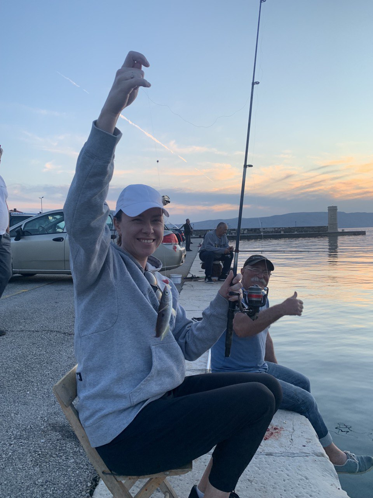
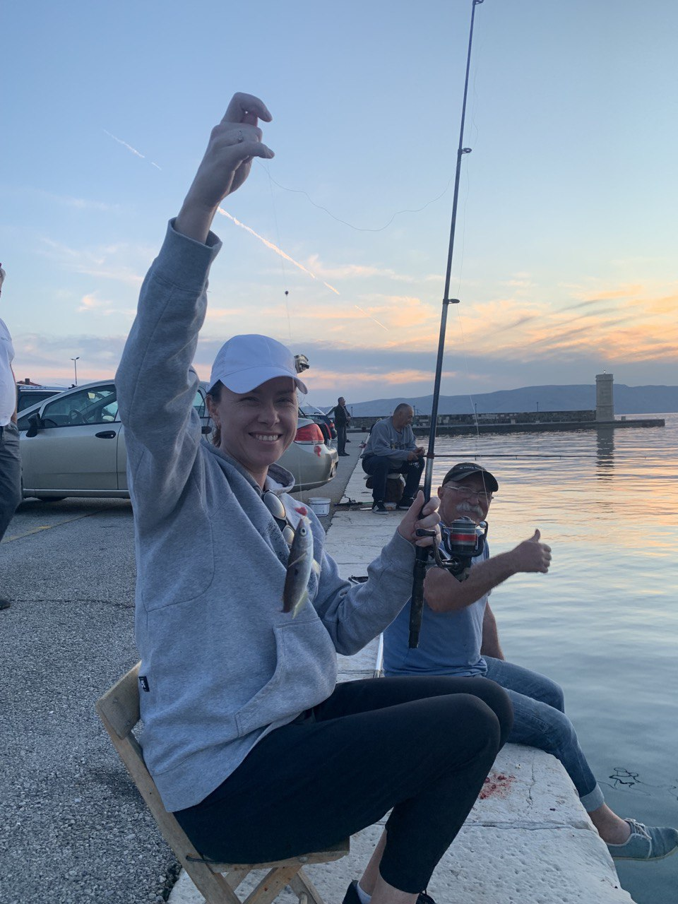

Про особисте
Вітаю! Мене звати Світлана, 42 роки. Я добра, весела, енергійна, комунікабельна, приваблива жіночка у розквиті сил!
Заміжня, кохаю чоловіка, двох чудових синів, щаслива дружина та мати. Що я ще можу розповісти про себе? Останнім часом замислююсь про те,
скільки часу відкладала для реалізації себе як програміста?! Буденість, піклування про дітей, сім'ю, робота по графіку з повним соцпакетом -
це все, чим я відверто себе втішала і не ризикувала зробити кроки для здійснення мрії. І ось настав той момент коли я стала відвертою сама з собою.
Життя занадто коротке щоб його відкладати! Рішення про навчання було прийнято за одну секунду, коли дізналася про курс, так склалися зірки!
Вирішила рухатись покроково, почну з верстки.
Освіта
Закінчила у 2003 році Кременчуцький Університет економіки, інформаційних технологій та управління, спеціальність - "системи управління і автоматики" та здобула кваліфікацію інженера-системотехніка систем управління і автоматики.
Робота
Працюю в соціальній сфері, держслужбовець (місцеве самоврядування). Мій відділ займається автоматизацією, підтримкою та обслуговуванням програмних засобів, мережевого обладнання, комп'ютерної та оргтехніки. Деякі напрямки роботи за можливості автоматизую (пишу невеликі програми), користуючись тими знаннями, які опранувала самостійно. Нажаль в командній розробці ніколи не працювала, хіба що створювали невеликий проект на курсах Altexsoft по вивченню C#. Останній проект я написала на JavaFX, MySql. Вивчаю Java, Spring MVC, String Data JPA, Hibernate, Spring Security, шаблонізатор Thymeleaf. Хочу опанувати front-end. Не буду обмежувати свої мрії, скажу що хочу бути full stack розробником! Мріяти так мріяти!
Мої захоплення
- Подорожі
- Активний відпочинок
- Рибалка
- Вишивка
- Кулінарія
Галерея
 

Про майбутнє
- Хочу щоб скоріше закінчилася війна, перемогою України!
- Хочу успішно закінчити курс "FreelanserLifeStyle" з верстки
- Вивчити JavaScript, React
- Хочу відчувати себе комфортно та впевнено
- Знайти цікаву, оплачувану роботу, яка буде приносити задоволення
- Подорожувати
- "Жити! А працювати у вільний час!"